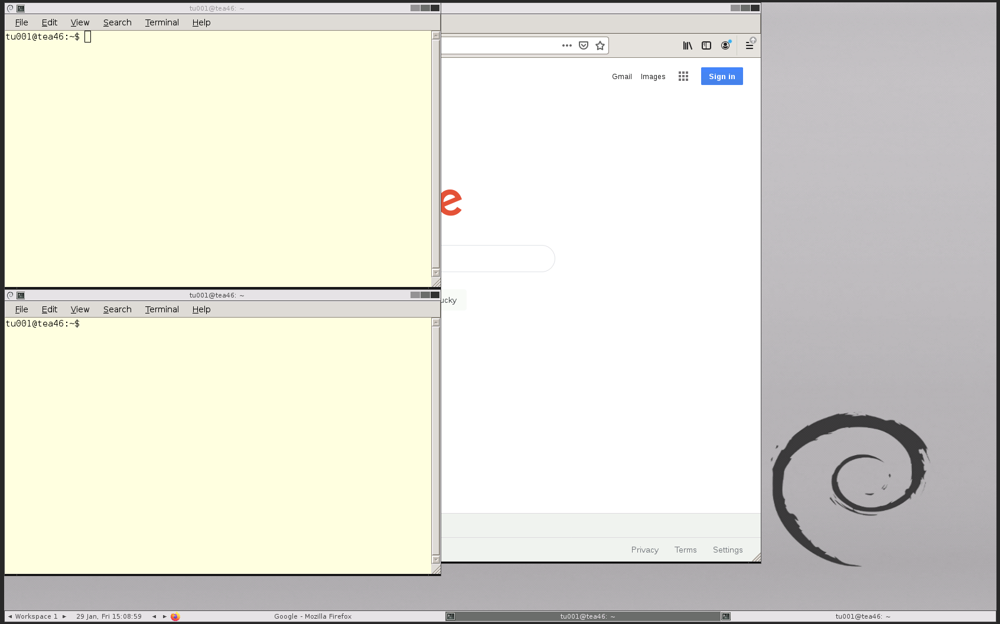

Chapter 3 Starting

3.1 Logon instructions
For this workshop we will be using Virtual Network Computing (VNC). Connect to the VNC with a browser by using the webVNC link you were sent.
You will now be in a logged-in Linux VNC desktop with two terminals. You will see something as below (there may be only one terminal which is fine). If you do not see something similar please ask for assistance.

If the VNC is taking up too much/little space of your browser you can use the zoom of your browser to adjust the size. Ensure you can see one whole terminal.
These instructions will not work outside of this workshop. If you would like to install your own Linux OS on your desktop or laptop we would recommend Ubuntu.
The following link is a guide to install Ubuntu:
https://www.ubuntu.com/download/desktop/install-ubuntu-desktop.
If you use a USB you need to create a bootable USB stick. The following link will assist:
https://www.ubuntu.com/download/desktop/create-a-usb-stick-on-windows
3.2 The Terminal Window
In our case the terminal window looks like the picture below. We are using the terminal window as our shell to interpret our commands to the kernel. Depending on your system and preferences it may look different.

Already there is useful information for us on the terminal window.
- nsc006: This is the login name, also known as the username. In this case nsc006 is a demonstrator’s account. Your screen should show a different account name which will be your username for the Linux machine/cluster you are logged into.
- gauss03: This is the machine name the user is logged into.
- ~: This represents the current directory of the user, or the directory a command was run in. In the Linux OS and others ‘~’ is a shortcut to the user’s home directory.
- Everything after the ‘$’ is where commands are typed into the terminal. This is also referred to as the command line.
To open a new terminal window, right click on the main screen, choose Applications -> Shell -> bash
3.3 Commands
Commands are typed into the terminal and then run by pressing “enter””

To run a command select your terminal by clicking on it or using “alt+shift”.
Now run the below command:
echo "Hello World"" In this case echo is a command that prints out the term “Hello World.”
Now try:
echo "Bye World"" There are many different Linux commands and we will run through a few. With a large variety it can be hard to remember all the commands and how they work.
Three convenient resources are:
- Search engines (e.g. Google): There are many forums where people ask for help with command line issues. If you have an issue and are not sure what to do, most likely someone else has had the same issue and asked for help on a forum. The tricky part of this is knowing the specific terminology to use when searching. Forums where people ask bioinformatics questions include SEQanswers, Stack overflow and biostars.
- Cheat sheets: It is never wrong to “cheat” when coding. Cheat sheets with many commands and good descriptions are very useful. Here is a good example of one: https://files.fosswire.com/2007/08/fwunixref.pdf
- Manual pages: Linux commands have many different parameters and options. If you ever need to figure out what they all are and what they do you can use the
mancommand.
E.g. The below command will show the manual page for the echo command:
man echoThe below command will show the manual page for the man command:
man manNote: The man page acts like using the command less (we will get into more specifics later). Important notes for now are to use the arrow keys to go up and down the page and press q to exit the manual
Note: There is a cheat sheet at the end of this document with all the commands covered in this practical.